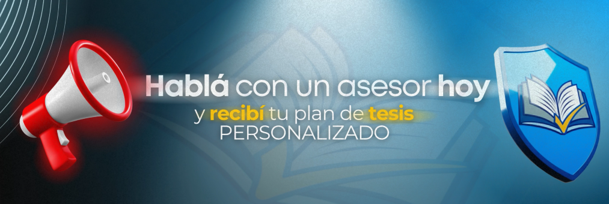

La revisión bibliográfica es una de las etapas más temidas al hacer una tesis, pero también una de las más importantes. Muchos estudiantes llegan a este punto sin saber por dónde empezar o qué tipo de información necesitan.
En esta guía te compartimos 5 tips clave para que tu revisión bibliográfica salga bien y te permita construir una base sólida para tu trabajo académico.
¿Qué es una revisión bibliográfica?
Antes de buscar libros o artículos, es fundamental entender que la revisión bibliográfica no es solo copiar teóricas: su objetivo es analizar, comparar y sintetizar la información existente sobre tu tema de investigación. Esto te permite demostrar que conoces el estado actual del tema y justifica la importancia de tu propia tesis o monografía.

1. Busca fuentes académicas confiables
No todo lo que aparece en Internet sirve para tu tesis. En esta etapa, priorizá:
- Artículos científicos publicados en revistas académicas
- Libros especializados
- Tesis de ejemplos de universidades reconocidas
- Documentos oficiales o estadísticas institucionales
Evitá blogs personales o fuentes sin respaldo académico. Cuanto más confiables sean tus fuentes, mayor será la calidad de tu revisión bibliográfica.
2. Clasifica y organiza la información
A medida que encontrás material, organizalo por temas, teorías o enfoques. Podés usar una planilla o herramientas como Zotero o Mendeley para registrar referencias. Esto te va a facilitar la escritura y las futuras citas en Normas APA.
3. Compará y analiza, no copies
El valor de una buena revisión bibliográfica está en tu capacidad de analizar. Mostrá coincidencias, diferencias, avances y vacíos entre los autores. Por ejemplo: "Mientras Lopez (2020) afirma que…, García (2022) sostiene que…" Este tipo de contraste le da a tu tesis una mirada crítica y profesional.
4. Cerrá con una síntesis clara
Finalizá tu revisión resumiendo los principales aportes y señalando los vacíos que justificarán tu estudio. Así, marcás la conexión entre lo que ya se sabe y lo que tu tesis aportará.
La revisión bibliográfica no es un trámite, es la columna vertebral de tu investigación.
Si todavía no sabés cómo organizar tus fuentes o cómo redactar esta parte, en Tesis Challenge podemos ayudarte. Nuestro equipo te guía paso a paso para que tu tesis tenga la base teórica más sólida y profesional.